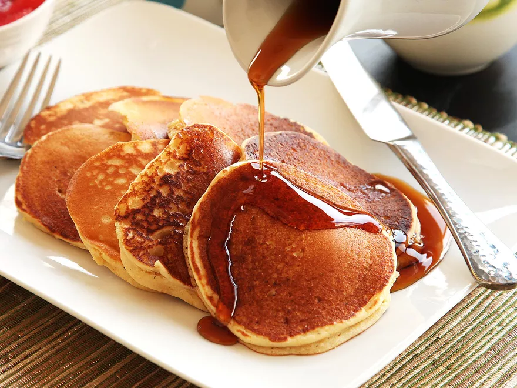

Pancakes

Ingredients
- Basic Dry Pancake Mix
- 10 oz all purpose flour (~2 cups)
- 1 tsp baking powder
- 1/2 tsp baking soda
- 1 tsp kosher salt
- 1 tbsp sugar
- For Each Batch of Pancakes:
- 2 large eggs, separated
- 1 1/2 cups buttermilk (~12 flozs)
- 1 cup sour cream (~8 flozs)
- 4 tbsp unsalted butter, melted
- Warm maple syrup
Steps
- For the Dry Pancake Mix: Combine flour, baking powder, baking soda, salt, and sugar in a medium bowl and whisk until homogenous. Transfer to an airtight container. The mix will stay good for 3 months.
- For each Batch of Pancakes: Place one batch of dry mix in a large bowl. In a medium clean bowl, whisk the egg whites until stiff peaks form. In a large bowl, whisk the egg yolks, buttermilk, and sour cream until homogenous. Slowly drizzle in the melted butter while whisking. Carefully fold in the egg whites with a rubber spatula until just combined. Pour the mixture over the dry mix and fold until just combined (there should still be plenty of lumps).
- Heat a large heavy-bottomed nonstick skillet over medium heat for 5 minutes (or use an electric griddle). Add a small amount of butter or oil to the griddle and spread with a paper towel until no visible butter or oil remains. Use a 1⁄4-cup dry measure to place 4 pancakes in the skillet and cook until bubbles start to appear on top and the bottoms are golden brown, about 2 minutes. Carefully flip the pancakes and cook on the second side until golden brown and completely set, about 2 minutes longer. Serve the pancakes immediately, or keep warm on a wire rack set on a rimmed baking sheet in a warm oven while you cook the remaining 3 batches. Serve with warm maple syrup and butter.